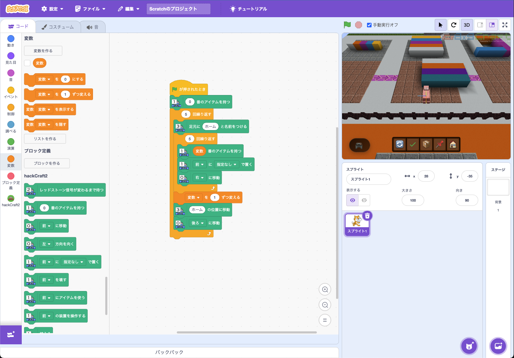

Scratch3ベースの拡張エクステンションでMinecraftをプログラミング
50個のブロックでMinecraftの動物を操作し、イベントを取得してプログラミングを楽しもう
hackCraft2は、[Scratch3](https://stretch3.github.io/)を改良し、Minecraftの動物をプログラミングで操作できるようにした拡張エクステンションです。
既存のScratch3エディタに新しい機能を追加します。
Scratch3エディタにhackCraft2拡張エクステンションを追加した様子
左側のブロックパレットにhackCraft2のブロックが追加されています
hackCraft2拡張エクステンションでは、Minecraftの動物プログラミングに特化した豊富なブロックを提供しています。
基本的な移動と操作を行うブロックです。
（ ）に移動 - 指定方向に移動（前/後/左/右）（ ）方向を向く - 向きを変更（左/右）（ ）の力で歩く - 指定速度で移動（ ）の力でジャンプする - ジャンプ（ ）度回る - 指定角度で回転（ ）に移動 - 指定座標に瞬間移動（ ）を向く - 指定座標を見る（ ）（ ）（ ）で加速 - 力を加えるブロックの配置・破壊・調査を行うブロックです。
（ ）に（ ）で置く - ブロックを配置（ ）を壊す - ブロックを破壊（ ）に（ ）で置く - 指定座標にブロック配置（ ）を壊す - 指定座標のブロック破壊（ ）座標のブロック - 指定座標のブロック調査植える - 作物を植える収穫する - 作物を収穫耕す - 土を耕す平たくする - 地面を平らにするアイテムの取得・使用・管理を行うブロックです。
（ ）番のアイテムを持つ - アイテムを拾う（ ）番のアイテムを（ ）に渡す - アイテムを渡す（ ）番に（ ）をセット - アイテムを設定（ ）にアイテムを使う - アイテムを使用（ ）にアイテムを使う - 指定座標でアイテム使用（ ）にアイテムを入れる - チェストにアイテムを入れる（ ）からアイテムを取り出す - チェストからアイテムを取る（ ）番にアイテムがある？ - スロットにアイテムがあるか確認イベントの検知と通信を行うブロックです。
（ ）を受け取った時 - カスタムイベントの検知（ ）に（ ）を送る - イベントを送信レッドストーン信号が変わるまで待つ - レッドストーン信号を待機話しかけられるまで待つ - チャットメッセージを待機（ ）と言う - チャットメッセージを送信話しかけられた（ ） - チャットデータを取得レッドストーン信号（ ） - レッドストーンデータを取得環境や状態を調査・判定するブロックです。
自分の座標を調べる - 現在位置を取得（ ）にブロックがある？ - 指定方向が塞がっているか判定（ ）のブロックを壊せる？ - 指定方向を掘れるか判定（ ）までの距離 - ターゲットまでの距離を取得（ ）までの距離 - 指定座標までの距離を計算壊れたブロック（ ） - 破壊したブロックの情報を取得（ ）色のブロック - ブロックの色を取得座標システムやAI機能を含む高度なブロックです。
座標（ ）（ ）（ ）（ ） - 座標システム（相対/絶対座標）足元に（ ）と名前をつける - マークを設定（ ）の位置に移動 - マークに移動攻撃する - 攻撃（ ）の装置を操作する - アクション実行鳴く - 音を鳴らす３D画面の不透明度（ ） - 透明度を設定AIに（ ）と聞く - AIとの対話/（ ） - コマンド実行デバッグ情報 - 実行結果を取得hackCraft2では、Scratch3エディタ内に独自のMinecraft 3Dビューを表示できます。これにより、プログラミングしながらリアルタイムでMinecraftの世界を確認できます。